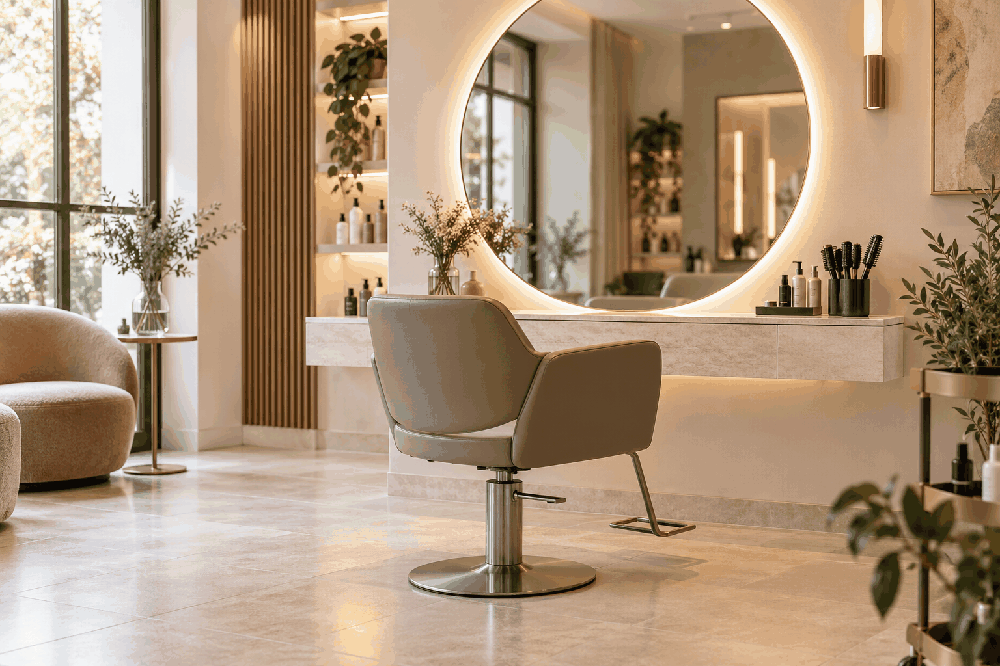

Односторінковий сайт
Сайт для презентації окремої послуги, продукту або рекламної пропозиції з чітким шляхом до звернення.
Створюємо ширший простір для вашого бізнесу.
Створюємо сучасні адаптивні сайти для спеціалістів, сервісних компаній і локальних брендів — від продуманої структури та дизайну до готових файлів для публікації.
Сайт для презентації окремої послуги, продукту або рекламної пропозиції з чітким шляхом до звернення.
Персональний сайт для лікаря, консультанта, майстра чи іншого експерта з описом послуг, підходу та контактів.
Структурована презентація бізнесу з інформацією про компанію, послуги, переваги, процес роботи та способи зв’язку.
Сайт для демонстрації робіт, проєктів, професійного досвіду або творчого напряму.
Допомагаємо впорядкувати підтверджені матеріали клієнта, сформувати розділи, заголовки, описи послуг і заклики до дії.
Перевіряємо адаптивність і контакти, готуємо файли сайту та зрозумілу інструкцію для розміщення на домені.
Для зрозумілої презентації досвіду, послуг, підходу до роботи та прямого контакту.
Для кабінетів і спеціалістів, яким потрібні коректні формулювання, спокійна подача та зручна навігація.
Для презентації послуг, атмосфери, напрямів роботи та способів зв’язку.
Для компаній, які працюють у своєму місті й хочуть зрозуміло представити послуги та контакти онлайн.
Для команд, яким потрібно стисло пояснити складніші послуги, процес співпраці та цінність для бізнес-клієнта.
Для демонстрації робіт, напрямів, досвіду та формату співпраці.
Ці приклади показують можливі напрями дизайну для різних сфер. Вони не є завершеними проєктами реальних клієнтів.
Демонстраційний сайт
Концепт інформаційного сайту кабінету УЗД із переліком обстежень, правилами підготовки та зручним переходом до контактів.
Переглянути демонстраційний сайт
Демонстраційний сайт
Демонстраційний концепт сайту студії краси з послугами, атмосферою, візуальними блоками та зручним переходом до контактів.
Переглянути демонстраційний сайт
Демонстраційний сайт
Демонстраційний сайт затишної кав’ярні з меню, атмосферою, галереєю, форматами відвідування та переходом до контактів.
Переглянути демонстраційний сайтКожен розділ допомагає відвідувачу зрозуміти пропозицію і перейти до наступної дії.
Структура, тексти, кольори та візуальні акценти добираються відповідно до матеріалів і напряму клієнта.
Блоки, навігація, кнопки та контакти адаптуються до комп’ютера, планшета й телефона.
Клієнт переглядає сайт, перевіряє матеріали та погоджує фінальну версію до розміщення.
Уточнюємо мету сайту, аудиторію, послуги, побажання та наявні матеріали.
Визначаємо потрібні розділи, порядок інформації та основні контактні дії.
Опрацьовуємо надані факти, заголовки, описи послуг і заклики до дії.
Добираємо композицію, типографіку, палітру та локальні візуальні матеріали.
Готуємо адаптивний сайт і перевіряємо відображення, навігацію, контакти та внутрішні посилання.
Передаємо готові файли та погоджений порядок розміщення сайту на домені.
Остаточний обсяг і вартість визначаємо після короткого обговорення завдання, матеріалів і потрібної структури.
Для окремої послуги, спеціаліста або першої комерційної сторінки.
Індивідуальний розрахунок
Для бізнесу, якому потрібно детальніше представити послуги, процес роботи та переваги.
Індивідуальний розрахунок
Для проєкту з особливою структурою, стилем або розширеним обсягом матеріалів.
Після уточнення завдання
Термін залежить від типу сайту, обсягу матеріалів і кількості погоджених правок. Після короткого брифу визначаємо реалістичний план роботи.
Опис бізнесу та послуг, актуальні контакти, логотип за наявності, фотографії або інші матеріали, а також приклади стилю, який вам подобається.
Допомагаємо структурувати надану інформацію, підготувати заголовки й зрозумілі описи. Усі факти про бізнес перед публікацією підтверджує власник.
Так. Використовуємо матеріали, надані клієнтом, якщо він має право на їх публікацію та вони мають достатню якість.
Так. Сторінки створюються з адаптивним компонуванням для комп’ютерів, планшетів і телефонів.
Так. Подальші зміни, нові розділи або оновлення контенту можна погодити окремо.
Домен і хостинг узгоджуються окремо. Допомагаємо підготувати сайт до публікації та пояснюємо порядок його розміщення.
Ні. Сайт допомагає професійно представити бізнес і спростити звернення, але результат також залежить від пропозиції, реклами, попиту та роботи самого бізнесу.
SHYROKO WEB STUDIO
Розкажіть про свій бізнес, послуги та завдання. Ми допоможемо визначити відповідний формат, структуру і наступний практичний крок.